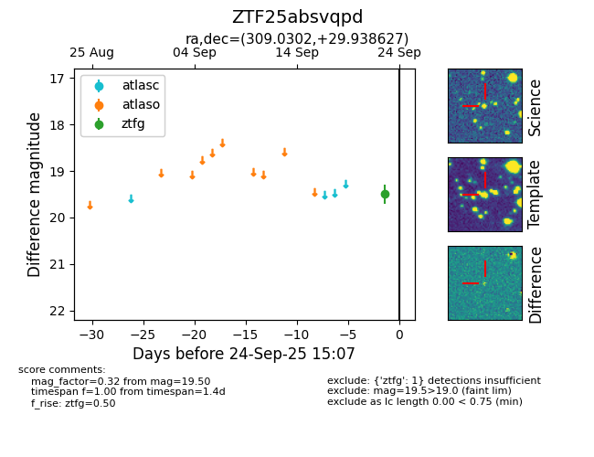

FINK: ZTF25absvqpd
Lasair: ZTF25absvqpd
ALeRCE: ZTF25absvqpd
ZTF25absvqpd (ztf,fink)
equatorial (ra, dec) = (309.0302,+29.93863)
galactic (l, b) = (71.4235,-6.46405)

last ztfg=19.50
1 ztfg detections